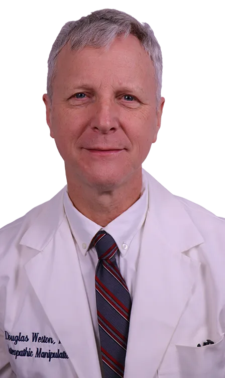

Douglas Weston, DO graduated from New York College of Osteopathic Medicine and completed the Neuromusculoskeletal Medicine residency at St. Barnabas Hospital in Bronx, New York. During his 25 years of practice and teaching, he had a hospital practice where he taught medical students and medical residents, had a private practice in New York City, and taught at 4 colleges of Osteopathic Medicine, at the last two of which serving as Chair of the Department of Osteopathic Manipulative Medicine.
Early in my career, as the most junior faculty member at an Osteopathic school, I was assigned to teach a summer course on Osteopathic Manipulation to the Physical Therapy students. There was no ready-made curriculum and none of the material would be on their board exams, so I decided to try something different. I only taught them the techniques that I had used in my hospital practice, techniques that required a fair bit of skill with palpation and a little patience, but did not require a sophisticated Osteopathic diagnosis nor a complicated treatment setup. The students seemed reasonably happy and at the end, I was reasonably satisfied that I had provided the requisite entertainment. I was not prepared for what I saw in the final exam, however. The actual treatment results were better than what I had seen with the regular Osteopathic students who had completed 2 years of lectures and labs.
I spent the next 20 years taking this unexpected finding and turning it into a teaching system, based on a 2-step process: (1) provide a detailed description on how to find crucial landmarks. (2) Provide a series of exercises, starting with simple and progressing to the actual diagnostic and treatment methods. Within a relatively short period of time, a student has a technique that he knows he can use. This teaching method is light on theory and heavy on detailed practical instructions. This is the method you will find in these Cranial teaching products.